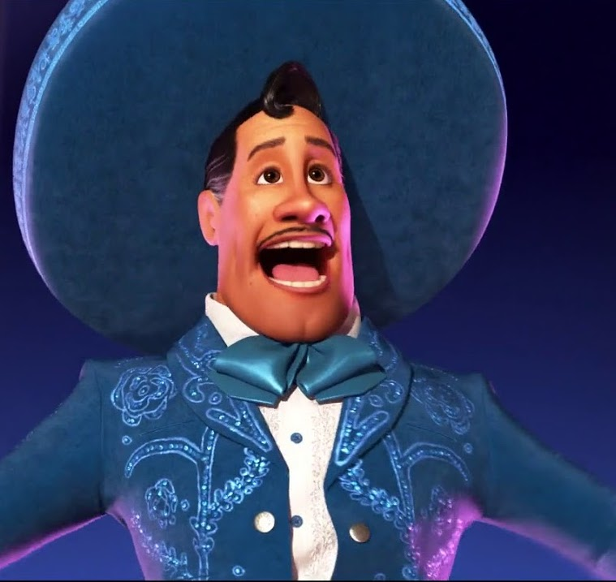
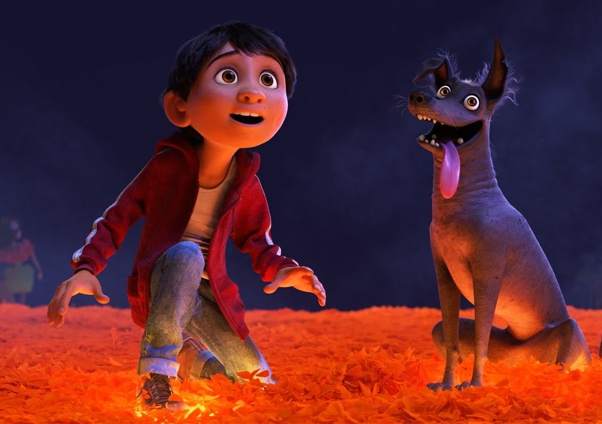
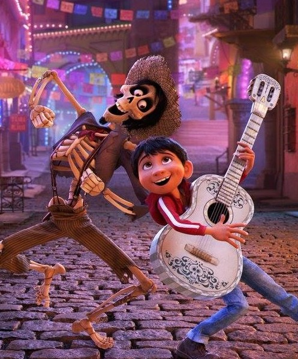
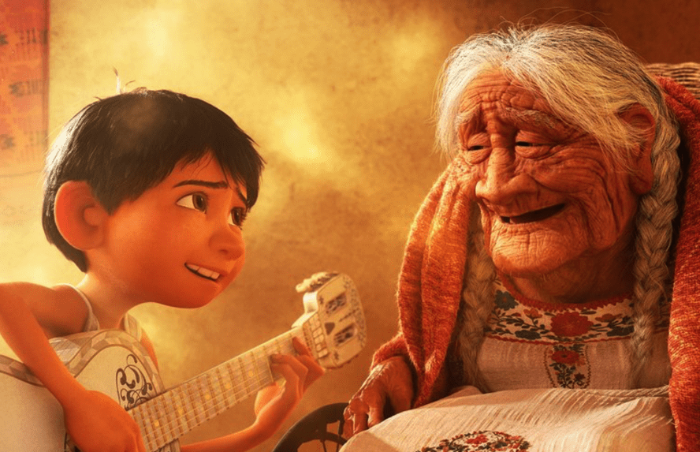

A celebration of life,
family, and love.
In Santa Cecilia, Mexico, Miguel dreams of becoming a musician, even though his family strictly forbids it. His great-great-grandmother Imelda was married to a man who left her and their daughter Coco to pursue a career in music, and when he never returned, Imelda discarded all forms of music from her family's life before starting a shoemaking business. Miguel now lives with the elderly Coco and their family, including Miguel's parents and grandmother, who are all shoemakers. Coco suffers from memory loss and has become largely non-verbal, but Miguel is very close to her. Miguel secretly idolizes famed musician Ernesto de la Cruz and practices his guitar skills using Ernesto's old films. On the Day of the Dead, Miguel accidentally damages the picture frame that holds a photo of Coco with her mother and her father (the latter's face torn off the picture) on the family ofrenda, discovering that a hidden section of the photograph shows his great-great-grandfather holding Ernesto's famous guitar. Miguel, concluding that Ernesto is his great-great-grandfather, ignores his family's objections and decides to enter the local talent show.
Breaking into Ernesto's mausoleum, Miguel takes his guitar to use in the show, but once he strums it, he becomes invisible to everyone in the village plaza. However, he can interact with his skeletal deceased relatives, who are visiting from the Land of the Dead for the holiday. Taking him back with them, they learn that Imelda cannot visit, since Miguel accidentally removed her photo from the ofrenda. Miguel discovers that he is cursed for stealing from the dead, and must return to the Land of the Living before sunrise, or he will become one of the dead; to do so, he must receive a blessing from a member of his family. Imelda offers Miguel a blessing on the condition of ending his dream of becoming a musician, but Miguel refuses and resolves to seek Ernesto's blessing instead.
He meets Héctor, who declares that he knows Ernesto, offering to help Miguel reach him in return for Miguel taking his photo back with him, so that he might visit his daughter before she forgets him, causing him to disappear completely. Héctor helps Miguel enter a talent competition to win entry to Ernesto's mansion, but Miguel's family tracks him down, forcing him to flee. Miguel sneaks into the mansion, where Ernesto welcomes him as his descendant, but Héctor confronts them, again imploring Miguel to take his photo to the Land of the Living. Ernesto and Héctor renew an argument from their partnership in life, and Miguel realizes that when Héctor decided to leave to return home to his family, Ernesto robbed him of his guitar and songs after poisoning him, passing them off as his own to become famous. To protect his legacy, Ernesto seizes the photo and has his security guards throw Miguel and Héctor into a cenote pit. There, Miguel discovers that Héctor is his actual great-great-grandfather, and Coco's father. Héctor only wanted to go to the Land of the Living so he could see Coco again.
After Imelda and the family rescue the duo, Miguel reveals to her what really became of Héctor. Imelda and Héctor slowly reconcile, and the family infiltrates Ernesto's concert to retrieve Héctor's photo. Ernesto's crimes are exposed to the audience, who jeer at him as he is flung out of the stadium by Imelda's spirit guide, Pepita. Ernesto is then trapped under a giant bell, recreating the circumstances of his death; in the chaos, however, Miguel loses the photo. As the sun rises, Coco's memories are fading; Imelda and Héctor bless Miguel, so that he can return home. After Miguel plays "Remember Me", a song that Héctor wrote for Coco, which Ernesto used as his number one hit, Coco brightens and sings along with Miguel. She reveals that she had saved the torn-off piece of the family photo with Héctor's face on it, and then tells her family stories about her father, thus saving his existence in the Land of the Dead. Miguel's family reconciles with him, ending the ban on music.
One year later, Miguel shows his new baby sister the family ofrenda, which now includes Héctor and a recently deceased Coco. Using Coco's collected letters from Héctor, the family proves that Ernesto stole his songs, destroying Ernesto's legacy and allowing Héctor to be rightfully honored in his place. In the Land of the Dead, Héctor and Imelda rekindle their romance and join Coco for a visit to the living, where Miguel performs for his family.
Event #1
hello description here
Event #2
hello description here
Event #3
hello description here
Event #4
hello description here
